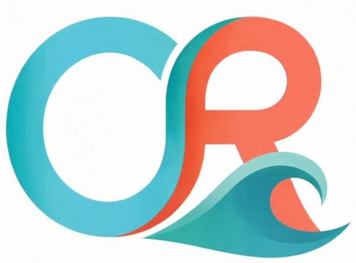

Caribbean Reef Adventures
Home
Servicios
Acerca de
Contacto
Gestión
WhatsApp
Catálogo completo
Nuestros Servicios
Descubre todas las aventuras acuáticas en las aguas del Caribe colombiano.
⭐ Mis favoritos